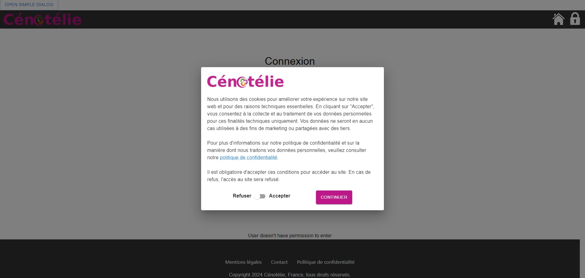
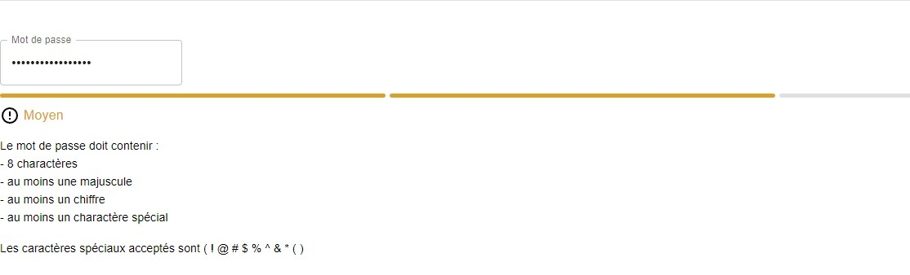
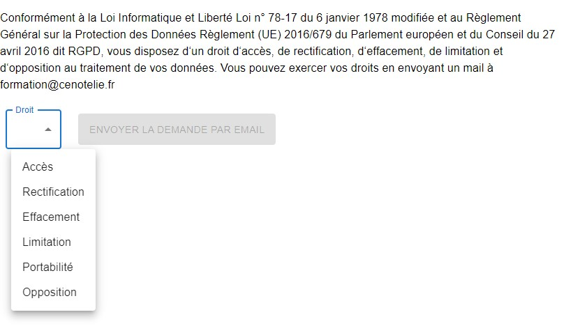
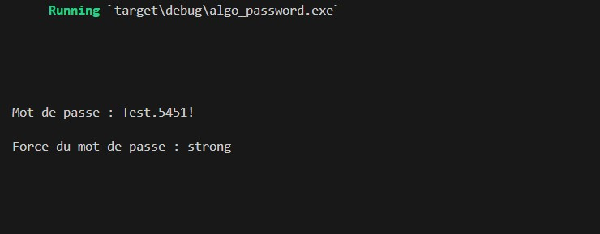
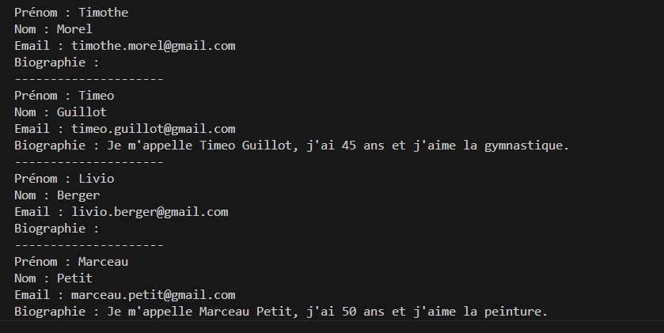

Mes stages professionnelles

En première année de BTS SIO SLAM
J’ai effectué un stage du 30/05/2023 au 30/06/2023 soit 5 semaines dans le cadre de
ma formation au BTS SIO. Ce stage a été fait en télétravail avec l’entreprise
Cénotélie. Il s’agit d’une entreprise qui propose des solutions industrielles
informatiques. De plus, elle offre des formations techniques et scientifiques dans le
domaine de l’informatique. Finalement, elle propose aussi des services de recherche
et développement. Elle possède un site web qui est : https://cenotelie.fr
Tout au long de ce stage, j’ai été formé par mon tuteur et en autonomie à savoir
utiliser les outils de programmation utilisés par l’entreprise par le biais d’un
exercice type projet. Le but du projet était de créer une application web en Java
avec le framework Spring qui permet de manipuler une base de données et d’exporter
des données sous la forme d’un fichier Word selon un modèle prédéfini. Il a été
décidé de créer une base de données qui stocke des informations sur des livres et
des films.
Les outils de programmation utilisés dans le projet sont l’IDE IntelliJ
IDEA, le logiciel de gestion de versions décentralisé Git, la plateforme
d’hébergement de code GitHub, le logiciel XAMPP, le SGBD MySQL, le moteur de
production Gradle, le framework Spring, la bibliothèque Java Lombok, le web
sémantique, les requêtes SPARQL et Apache POI.
Résumé des tâches effectuées dans le projet :
|
■ Création d’un nouveau projet Java sur IntelliJ IDEA qui utilise le framework
Spring avec les outils demandés. La création du nouveau projet s’est faite sur
le site internet : https://start.spring.io |
En deuxième année de BTS SIO SLAM
J’ai effectué un stage du 29/01/2024 au 22/03/2024 soit 8 semaines dans le cadre de ma
formation au BTS SIO. Ce stage a été réalisé en télétravail avec l’entreprise Cénotélie.
Tout au long de ce stage, j’ai effectué un audit de sécurité d’une application web
permettant de gérer les formations proposées par Cénotélie. De plus, sur cette même
application web, j’ai contribué au développement de la partie frontend et backend.
Voici le lien de l’application web : https://formation.cenotelie.fr/
L’audit de sécurité s’est déroulé sur un fichier Excel en ligne et structuré en plusieurs
parties. Les colonnes du fichier Excel sont les suivantes : l’élément audité, la méthode
de vérification, le constat, les mesures correctives et le statut de correction.
Résumé des tâches effectuées dans l’audit de sécurité :
|
■ Vérification de la mise en œuvre du RGPD : Politique de confidentialité, information
sur la collecte et le traitement des données personnelles, mise en œuvre des droits des
utilisateurs, sécurité et localisation du stockage des données personnelles… |
La contribution au développement de la partie frontend s’est faite avec l’IDE Visual Studio Code,
le logiciel de gestion de versions décentralisé Git et la plateforme d’hébergement de code GitHub.
La partie frontend est codée avec la bibliothèque React JavaScript/TypeScript et la bibliothèque
Material UI.
Résumé des tâches effectuées dans la contribution au développement de la partie frontend :
|
■ Bannière de consentement : Lorsqu'un nouvel utilisateur utilise l’application web, un
message s’affiche pour l’informer de la collecte et du traitement de ses données
personnelles. L’utilisateur doit accepter la bannière de consentement pour continuer
d’utiliser l’application web, la bannière de consentement est refusée par défaut
(Privacy by default). |

|
■ Indicateur de force de mot de passe : Lorsqu'un utilisateur choisit un nouveau mot de
passe, une barre colorée lui indique la force de son nouveau mot de passe. Le nouveau
mot de passe doit contenir 8 caractères, au moins une majuscule, au moins un chiffre et
au moins un caractère spécial pour être accepté. |

|
■ Interface de demande d’application d’un droit du RGPD : Conformément au RGPD, les
utilisateurs ont plusieurs droits sur leurs données personnelles, notamment le droit
d’accès, le droit de rectification, le droit à l’effacement, le droit à la limitation du
traitement, le droit à la portabilité des données et le droit d’opposition. Pour exercer
ces droits sur l’application web, il existe une interface permettant de sélectionner un
droit et d’envoyer automatiquement une demande par email à l’équipe de Cénotélie. |

La contribution au développement de la partie backend a été réalisée en utilisant l'IDE Visual
Studio Code, le gestionnaire de paquets Cargo pour le langage Rust, le logiciel de gestion de
versions décentralisé Git, ainsi que la plateforme d'hébergement de code GitHub. La partie
backend a été codée en Rust. J'ai suivi une formation d'introduction au langage Rust proposée
par Cénotélie dans le but d'apprendre à utiliser ce langage.
Résumé des tâches effectuées dans la contribution au développement de la partie backend :
|
■ Indicateur de force de mot de passe : Il s’agit du même code que celui utilisé en
frontend mais converti en Rust. En outre, des tests de propriété ont été ajoutés
pour permettre une évaluation automatique du code. |

|
■ Anonymisation des données personnelles : L'anonymisation des données personnelles
vise à empêcher l'identification d'une personne à partir de ses données personnelles.
Il s'agit d'une pratique courante dans le domaine de l'analyse de données. Dans le
cas de l’application web, l'anonymisation permet aux développeurs de l'application
web de tester le site avec des données utilisateurs les plus proches de la réalité,
sans pour autant accéder réellement à leurs données personnelles. De plus, des tests
unitaires permettent une évaluation automatique du code. |
